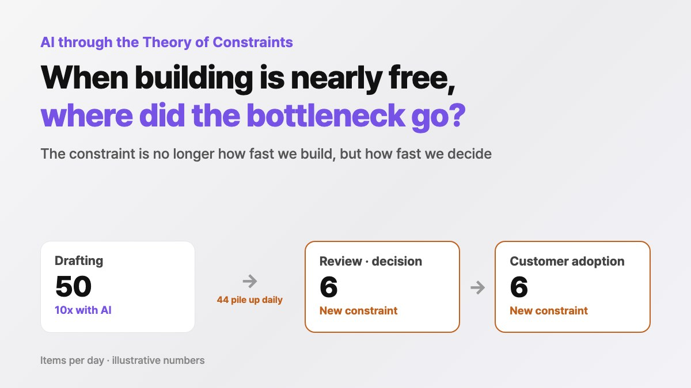

When Building Is Nearly Free, Where Did the Bottleneck Go? — Real Capability Through the Theory of Constraints

1. Building got faster, and the bottleneck moved
According to Eliyahu Goldratt's Theory of Constraints (TOC), the total output of work that passes through several steps is set by its slowest step, the constraint. In the previous post, "Start with the Weakest Link," we used this principle to explain AX change management.
This post takes up the next question. AI has sharply cut the cost and time of building and execution: writing code, drafting documents, analyzing data. So where did the constraint go? In short, it moved from machines to people and organizations, and specifically to deciding what to build, exercising judgment, and earning customer trust.
2. The speed of making and the speed of deciding
One of the core principles of the Theory of Constraints is this: no matter how much you speed up a step that is not the constraint, overall results do not improve. Unprocessed work simply piles up in front of the constraint.
Take a team that prepares proposals and delivers them to customers. Each step can handle a different number of items per day.
| Daily capacity | Drafting | Review and decision | Customer adoption | Cases finished per day | Items piling up per day |
|---|---|---|---|---|---|
| Before AI | 5 | 6 | 6 | 5 | 0 |
| AI added to drafting | 50 | 6 | 6 | 6 | 44 |
Hypothetical numbers for illustration. Orange marks the constraint in each case.
Drafting became ten times faster, but finished work only rose from 5 to 6 items a day. Meanwhile, 44 drafts a day pile up waiting for review. AI produces proposals, code, and marketing drafts in seconds, but the attention and decision speed of the people who review, approve, and take responsibility for them have not changed.
Surveys point the same way. In McKinsey's 2025 survey, 88% of respondents said their organizations regularly use AI in at least one business function. Yet only about 6% were high performers attributing 5% or more of EBIT to AI, and that share stayed flat in the 2026 survey. Software development shows the same pattern. Stack Overflow notes that code generation is no longer the constraint: more output means more to review, so review and judgment, along with coordination with product, design, legal, and security, have become the new constraints.
Many companies are speeding up steps that are not the constraint, and building a pile of output that waits for review.
3. Three new constraints
Once everyone has similar ability to execute, three constraints remain.
- Imagination and problem framing: The ability to ask not "how do we build it" but "what should we build, and why," and to frame it. McKinsey also says that when development gets faster, deciding what to build becomes the constraint. What limits innovation has shifted from development capacity to a company's imagination.
- Critical judgment: The ability to decide which of the many options AI produces to discard and which risks to take. It has to be judgment made with the whole system in view, not a single part.
- Customer pace and trust: However fast you build internally, customers learn new features and accept change at their own pace. That pace, and the trust underneath it, becomes the final constraint.
4. Strategic directions through the five steps
The Theory of Constraints handles a constraint in five steps: identify, exploit, subordinate, elevate, and repeat. Applied to running a company in the AI era, they point to four directions.
| Theory of constraints | Strategic direction | What to do |
|---|---|---|
| Identify · Exploit | Redesign the workflow instead of bolting AI on | Find the points that truly need human judgment and rebuild the rest of the flow around agents |
| Subordinate | Match the pace of the constraint and work in small batches | Split work into sizes that decision makers and customers can absorb, and define acceptance criteria first |
| Elevate | Concentrate authority in the people who design the system | Give agent permissions and resources to the people who see the whole and redefine the problem |
| Repeat | Measure customer value and learning, not output | Shorten the cycle for checking customer response, and look again when the constraint moves |
Redesign the workflow instead of bolting AI on
If you only place AI tools on top of a human-centered approval and reporting structure, people end up checking every AI output one by one and the bottleneck gets worse. In McKinsey's survey, high performers were about three times as likely as others to fundamentally redesign their workflows when deploying AI.
Match the pace of the constraint and work in small batches
The hardest of the five steps is subordination: slowing the other steps to the pace of the constraint. Being able to build anything with AI is no reason to launch projects everywhere. Split work into sizes that decision makers and customers can absorb, define acceptance criteria first, and leave only the key points where a person must judge.
Measure customer value and learning, not output
Output metrics such as lines of code or number of reports have lost their meaning. Because experiments and releases are faster, design a short cycle for checking customer response, and focus resources on helping customers adapt early and on building the relationship.
Concentrate authority in the people who design the system
Giving every employee the same AI tool does not produce the same value. Find the people who can see the whole system and redefine the problem, give them agent permissions and resources, and let the way of working they design spread across the organization.
5. Borrowed capability and capability you own
With AI's help, anyone can quickly produce something that looks convincing. That is why we need to separate capability briefly borrowed from AI from capability built up inside the organization and its people. We will call the first fake capability and the second real capability.
| Category | Fake capability (borrowed from AI) | Real capability (what gets past the new constraints) |
|---|---|---|
| Essence | Speed of producing output Turning out drafts, code, designs, and analysis reports quickly and in volume | Problem framing and system design Seeing what the real problem is and setting the rules and criteria AI will follow |
| Differentiation | Risk of sameness Average output anyone can get with the same model and prompts | A distinct brand and context An irreplaceable difference that comes from the company's philosophy, its own data, and deep customer trust |
| Decision making | Rubber-stamp approval Approving, or editing only the surface, without knowing how AI reached the answer | Critical judgment and exception handling Questioning AI's assumptions, taking risks among competing conditions, and bearing final responsibility |
| How capability accumulates | The more judgment is handed over, the more it fades Having left all execution to AI, the team stalls when an exception or crisis hits because no one knows the principles | Learning that loops back People learn from what AI executed and keep raising their own standards of judgment |
When building is nearly free, skill with AI itself, meaning prompts and tools, gradually becomes a basic. A capability everyone has is hard to compete on.
6. How uEngine approaches the new constraints
Tools alone do not resolve the three new constraints. But tools and methods are needed to shape the flow of work so people can focus on judgment, and to keep what is learned inside the organization. Here are uEngine's products and programs in the order of this post.
| Challenge in this article | uEngine products and programs |
|---|---|
| Deciding what to build, and why | The Agent Storming Workshop, which divides work between people and agents, and the diagnosis stage of the AX Transformation Program, which finds where work is stuck using a value stream ↗ Agent Storming Workshop ↗ Finding the bottleneck |
| Keeping only the points that need human judgment | Process GPT places an approval step where a person's final decision is required. In steps shared by a person and an agent, the agent writes the draft and the person reviews and submits it ↗ Org-chart-based agent mapping ↗ Agents running their assigned steps |
| Setting the criteria for judgment first | Business rules such as "approve if the score is 60% or higher" are managed as decision tables (DMN), so the path an agent takes is governed by explicit rules ↗ DMN business rules |
| Avoiding rubber-stamp approval | The execution profiler lets you trace why an agent judged the way it did, down to each language model call and tool call ↗ Execution profiler |
| Making learning loop back | As feedback on the same task accumulates, a skill improvement is proposed for human approval, and the change history is kept ↗ Agent work and skills refined by feedback |
| Measuring flow, not output | Total elapsed time is broken down into human judgment, agent execution, and waiting, showing where the constraint is ↗ Lead time breakdown |
Redesigning the workflow and changing roles is covered in the process innovation stage of the AX Transformation Program, and the habit of measuring and finding the constraint again in the change management stage.
7. Closing: companies that manage the new bottlenecks
When building is nearly free, competitiveness depends on how well a company manages three new bottlenecks.
- Imagination: seeing customer needs that others miss
- Judgment: picking out what should not be done from tens of thousands of AI outputs
- Relationship capability: building trust at the customer's pace, not the pace of technology
If you would like to find where your company's constraint is right now, take a look at the AX Transformation Program. For a consultation, please reach us through Contact Us.
References
- Theory of constraints — Wikipedia
- The state of AI in 2025: Agents, innovation, and transformation — McKinsey
- The state of AI in 2026: On the road to ROI — McKinsey
- AI-powered software development: How technology is rewriting the rules — McKinsey
- The new bottleneck — Stack Overflow Blog
- Start with the Weakest Link — AX Change Management Built on the Theory of Constraints
- Why AI Pilots Stall in Real Work — and Why the Process GPT Approach Matters